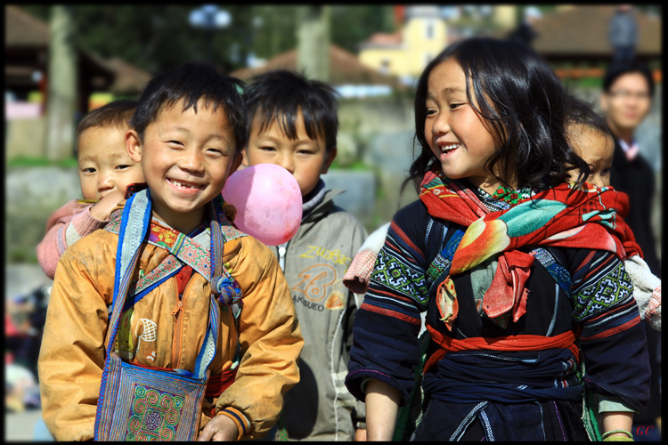

JP
JP
 VN
VN
DEVELOPING NEW PA-CANG VILLAGE, CA DY COMMUNE, NAM GIANG DISTRICT
27/9/2023

The new Pa-Cang residential cluster is 3 km by road from Xoi bridge on Ho Chi Minh Road. The village is located on the banks of the gentle Dak-my River. Behind the village are the cloud-covered mountains with peaceful scenery. The sound of bubbling water from streams, the wind blowing through the trees, and the chirping of birds in the sky always make the space here full of natural vitality.